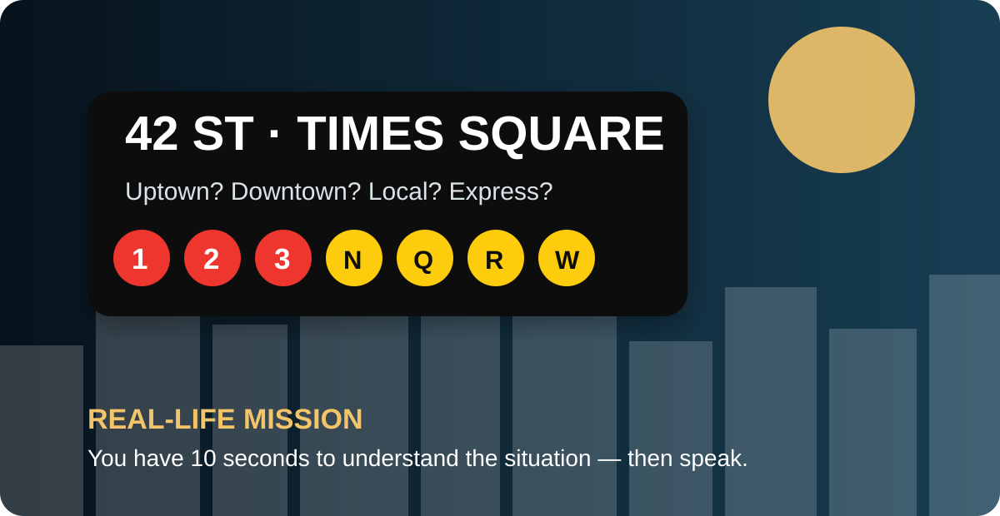

LESSON CONTROLS
Choose your training mode
0% complete
01 · WARM-UP
Ten seconds: what is the problem?
This is deliberately different from the previous lesson. You are not choosing an attraction or learning a register. You are extracting information and reacting immediately.

LISTEN ONCE
You are at Times Square. The train you planned to take has changed.
Natural model
The 1 train is skipping the local stops. I need to take the 2 and change at 72nd Street. I’d ask: “Excuse me, just to check, do I change at 72nd for a local train?”
02 · VOCABULARY FOR UNEXPECTED SITUATIONS
Words that help you solve the problem
Only useful vocabulary for the situations in this lesson. Choose a category.
03 · LISTENING FOR ACTION
What happened? What do you do next?
Each message contains extra words. Your job is to identify the information that changes your action.
04 · REFORMULATION
When the exact word disappears
This is one of the most important next-step skills: explain the idea instead of stopping or translating word by word.
05 · INTERACTION SKILL
Do not answer and stop
LILATE-style communication requires interaction. Use the “Answer + Detail + Return” technique.
ANSWER
Give the direct answer first.
“Yes, I can come back at four.”DETAIL
Add one useful piece of information.
“We can leave our bags here until then.”RETURN
Ask a question or confirm.
“Do you think the room will definitely be ready by four?”06 · NYC CHALLENGE CIRCUIT
Six conversations you cannot script in advance
Each card gives you new information. Listen, identify the problem and respond.
07 · SPEAK MORE CLEARLY
Connect your ideas instead of making isolated sentences
No new complicated grammar. Use four connectors to make your answer sound structured and exam-ready.
Give a reason.
I’d take the subway because it’s faster.Give a result.
The room isn’t ready, so we’ll leave the bags.Show contrast.
The taxi is easier, but it’s more expensive.Give a condition / solution.
If we’re late, I’ll call the restaurant.08 · SHORT WRITING
Write the message you would actually send
Short, clear and useful. No essay language.
MESSAGE A · RESTAURANT
You are going to be 20 minutes late.
Apologize briefly, give the new arrival time and ask whether they can keep the table.
Natural model
Hi, I’m sorry, but we’re running about 20 minutes late because of the subway. We should arrive around 7:50. Would it be possible to keep our table? Thanks very much.
MESSAGE B · HOTEL
Your arrival time has changed.
Explain that you will arrive after 10 p.m. and ask whether late check-in is possible.
Natural model
Hello, I have a reservation for tonight, but my arrival time has changed. I now expect to arrive shortly after 10 p.m. Is late check-in possible, and is there anything I need to do in advance?
09 · LILATE SPRINT
Four skills in increasing difficulty
Practice mode gives support. LILATE mode hides it until you have answered.
SPRINT 1 · 30 SEC
Summarize
Give the essential message in your own words.
Model
The reservation is still confirmed, but the table is now inside because of the weather. The other option is to change the reservation to tomorrow evening.
SPRINT 2 · 45 SEC
React and solve
Your hotel says your room will not be ready until 5 p.m. You have bags and a 2 p.m. museum ticket.
Model
That’s okay. Could we leave our bags at the hotel and come back after the museum? We have tickets for two, so we need to leave soon. Is there anything we need to do before we go?
SPRINT 3 · 60 SEC
Compare quickly
You can take a taxi for $45 and arrive in 20 minutes, or take the subway for much less and arrive in about 35 minutes. Explain your choice.
Model
I’d take the subway unless we were in a hurry. It takes about 15 minutes longer, but it costs much less. If we had heavy luggage or an important reservation, I’d probably choose the taxi instead.
SPRINT 4 · 90 SEC
Speak without a script
Describe a day when two things do not go according to plan. Explain the problems, what you do, and how you keep the day enjoyable.
01:30
10 · FINAL MISSION
One New York day. Three surprises. Keep going.
This is the real progression: understand, adapt and continue—not recite.
Your task: Talk through the whole day. For each surprise: explain what happened, react, find a solution and confirm the next step. Use because, so, but/however and if.
Structured model
First, the train wasn’t stopping at the station we needed, so I asked which local train we should take instead. At lunchtime, the restaurant couldn’t find the reservation, but I had the confirmation email, so I showed it to them and asked whether they could check the booking number. Later, I realized the show started earlier than I thought. If there wasn’t enough time for dinner, I’d have something quick nearby and go straight to the theatre. The important thing would be to stay calm and keep asking clear questions.
END · QUALIOPI